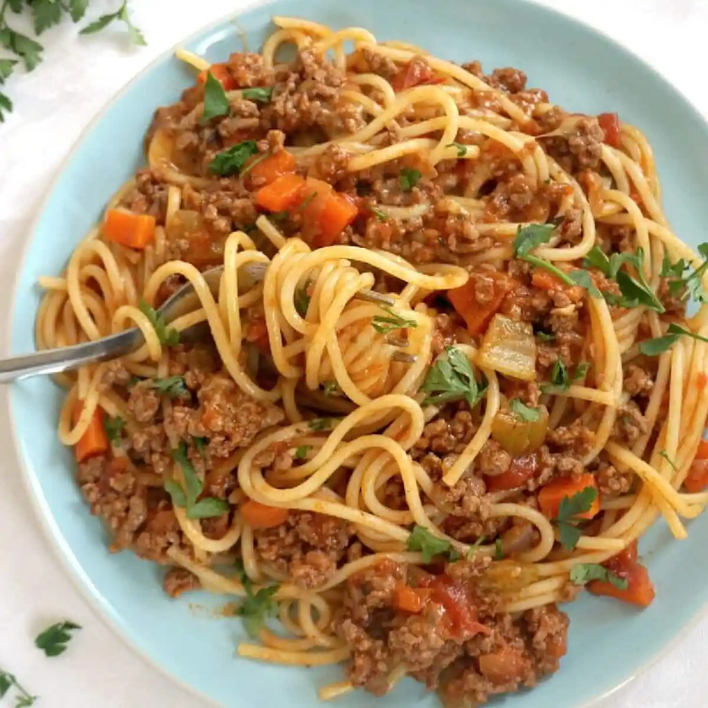

Spaghetti Bolognese recipe

Best Spaghetti Bolognese Recipe
Indulge in the classic Italian flavours with this Spaghetti Bolognese recipe.
This is quick recipe takes hardly 30 minutes and can be prepared without putting in much efforts.
The touch of lamb seasoned with oregano and Worcestershire sauce will satiate your cravings.
This dish has been staple for millions of diner since decades and is a perfect dinner recipe.
This recipe is best served with a tall glass of red wine and endless talks..
Ingredients
- 500 gm lamb
- 300 gm tomato
- 1 red pepper
- 2 tablespoon coriander leaves
- 1 tablespoon Worcestshire sauce
- 1 courgettes
- 1 teaspoon red chilli powder
- 1 teaspoon salt
- 1/4 teaspoon coriander powder
- 3 cup water
- 1 tablespoon coconut oil
- 250 gm pasta spaghetti
- 1 carrot
- 1 capsicum (green pepper)
- 1 onion
- 3 cloves garlic
- 1/2 teaspoon oregano
- 1/2 teaspoon black pepper
- 1 teaspoon cumin powder
Steps
- Add some coconut oil to the pan and add chopped onions and garlic paste.
- Saute the mixture until mixed properly.
- Next, add in the carrots, Worcestershire sauce, courgettes, peppers and cover the mixture for about 4 minutes
till the vegetables soften.
- Add some red chili powder, black pepper, coriander powder, cumin powder and salt to the mixture.
- You can also add some water to the mixture to get a more saucy texture.
- Cover and cook this mixture for at least 4 minutes and whilst the mixture is cooking, boil some spaghetti in salted water.
- Once the spaghetti is boiled, drain the water and empty the boiled spaghetti in a bowl of your choice.
- Add the mixture which was cooked earlier and garnish with coriander leaves.